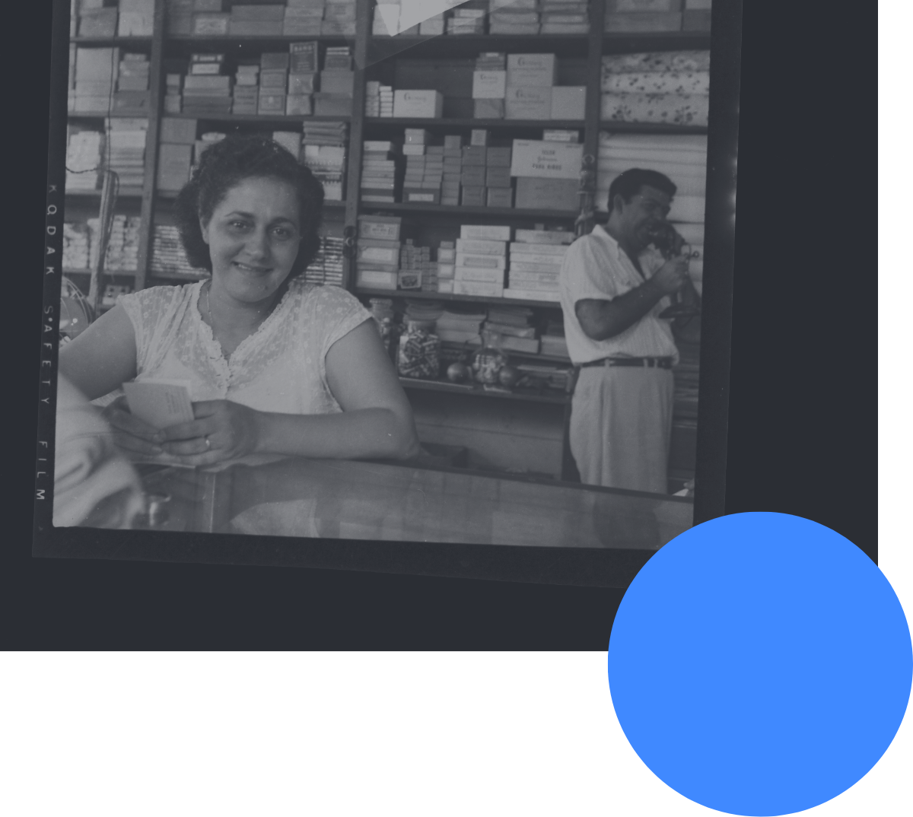

My name is Inés Binns. I’m the Women’s Officer here in the trade union SITRAIBANA. I’m a mother of seven children and it has been really difficult for me to raise them because of my work. We used to start work at 6am and leave at 9pm. Sometimes I didn’t have anyone to leave my children with; sometimes I had to leave them shut in a room– I had to leave four of them behind in a room just so that I could keep my job. If I didn’t, they would have fired me. Sometimes the children would get sick and I would be at work crying.
At times, I would ask permission to go and look after them. They would give me permission, but when it got to the end of the week and I went for my wages I wouldn’t have enough money. It’s a great sacrifice being a mother and worker in the banana plantations, and it’s difficult to keep your job.
I’ve been working with the trade union for three months– that hasn’t been easy either. It was the women workers who chose me to represent them at trade union level. I have every intention of doing my best to represent these women, and also the men, because there are many problems here. In the plantations, both field and pack-house workers get sick just because we’re trying to keep our jobs. We all have families and it’s difficult to find other work, which is why people work when they’re sick, even though they shouldn’t be at work at all.
It’s a fact that all the sacrifices we make are not well remunerated by the company. When you leave the job and your working relationship finishes, the company pays you a miserable sum– just what you’re owed. If I were to leave the company right now, the most they would give me is $4,000 for my 31 years of service. This is the fate of the banana worker.
Inés, if you were to send a message to consumers, what would it be?
How I would love to go to those countries over there where they consume the bananas that we produce here with so much sweat, with tears in our eyes and so many sacrifices. You, the consumers in Scotland, England, wherever, should know about the effort and sacrifices we make so that this fruit leaves in perfect condition. They’re always telling us off here and the bosses virtually lock us in until the fruit is ready to leave in perfect condition. We care for the bananas as if they were a new-born baby, but this isn’t reflected in our wages. We end up with only enough to cover our food and not enough to give education to our children.
At times we get ill from working so hard. We die because of the chemicals and we’re left with nothing. There’s nothing left for the family. When you die the doctor writes, “died of a common illness.” There are times when it’s definitely because of the chemicals, but they treat you like you were born with an illness. We make so many sacrifices.
We should be paid 24 to 25 cents for every box we pack, but when our new manager arrived he cut the rate by 2 cents per box, so now we're only paid 20. This destroys all the benefits that our union has gained through collective bargaining. I send the following message to you, the consumers: the workers of Bocas de Toro, Panama make many sacrifices. The businessmen don't tell you anything about the cost to us of producing bananas. No, they don't tell you, but they should tell the truth.